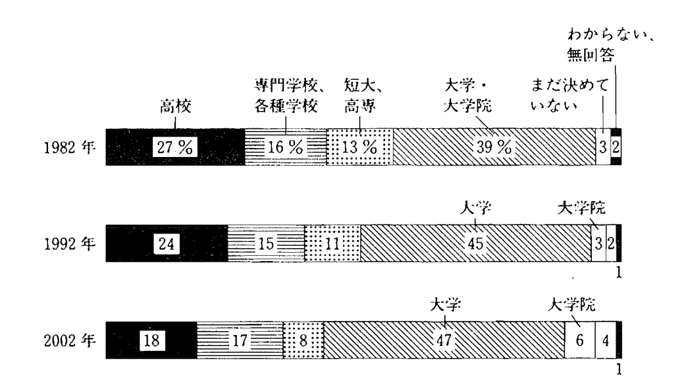

（1）
墓地
知覚（注1）の役割は、教科書的には、当面（注2）の世界の状況を具体的に把握することだと説明される。ある日突然、知覚の一つを失ったことを考えると、それはよくわかる。それぞれの知覚についての教科書的な説明は、だから五感（注3）という入力（注4）そのものの具体的な説明である。しかし脳にとっての知覚入力全体の役割は、それぞれの知覚そのものが果たす役割とは、違うはずである。脳はそうした諸入力の共通の処理装置でもあるからである。ヒトの知覚入力が脳で究極的に処理されて生じる、もっとも重要なことはなにか。
私はそれを世界像の構築（注5）だと考える。われわれはだれでも、ある世界に住んでいると思っている。その世界では、熱いものに触れば火傷し、火傷するとしばらく痛む。私の家からしばらく歩けばお寺があり、休日には何人もの人が写真をとったり、見物しているのを見ることができる。そこから20分も歩けば、鎌倉駅に着く。そこには東京方面と横須賀方面行きの電車が走っており、少し違った方向へ行けば、江ノ島（注6）電鉄線に乗れることがわかっている。
こうした身のまわりの世界像は、動物でも多かれ少なかれ、持っているはずである。たとえば私の家のネコも、自分の住む世界をそれなりに把握している。それはどうやらお寺の庭までらしい。そこまで出かけているのは見ることがあるが、それ以上先では、見かけたことがないからである。このネコを抱いて、ネコの知っているらしい範囲から出ようとすると、手のなかで暴れだし、飛び降りて逃げてしまう。
単純な世界像の一つとして、ダニ（注7）の世界を挙げることができる。葉上にいる吸血性（注8）のダニは、炭酸（注9）ガスに反応して、運動がさかんになる。炭酸ガスの濃度が上がることは、近くに呼吸をする動物が近づいた可能性を意味するからである。そこにわずかな震動が加わると、ダニは落下する。うまく落下すれば、動物のからだの上に落ちる。そこが37度程度の温度であり、あとは酪酸（注10）の臭いがすれば、ダニはただちに吸血行動を始める。（中略）このように、動物がそれぞれの限られた知覚装置から、自己の生存に必要な世界像を作っているであろうということは、ヤコブ・フォン・エクスキュルによって最初に主張されたことである。
われわれヒトが持っている世界像は、はるかに複雑である。しかしそうした世界像ができあがるについては、ダニの場合と根本的には同じように、そこにさまざまな知覚入力があったはずである。それらの入力は、脳で処理され、しばしば保存される。学校で勉強したことも、知覚からの入力である。先生の話を聞けば、話は耳から入ってくる。これは聴覚系からの入力である。教科書を読めば、視覚から入力が入ってくる。こうして五感から入るものを通して、われわれは自分の住む世界がいかなるものであるか、その像を作り出し、把握しようとする。
このようにして把握された世界は、動物が把握するような自然の世界だけではない。ヒトはさらに社会を作り出す。言い方を変えれば、社会はそうした世界像を、できるだけ共通にまとめようとするものである。ある社会のなかでは、人々はしばしば特定の世界像に対する好みを共有している。だからその社会は、共通の価値観を持ち、人々はしばしば共通の行動を示す。同じ社会のなかでも、友人どうしはそうした世界像が一致している場合が多い。さもないとおたがいに居心地が悪かったり、喧嘩になったりする。特定の世界像を構成し、それを維持し、発展させること、それが社会と文化の役割である。社会はじつは（ ② ）である。
（養老孟司『考えるヒト』筑摩書房による）
（注1）知覚：視覚、聴覚など、感覚器官が対象を見分ける働き
（注2）当面：いま直面していること
（注3）五感：視覚、聴覚などの五種の感覚
（注4）入力：外部から信号やデータなどが与えられること
（注5）構築：築き上げること
（注6）江ノ島電鉄線：鉄道の名前
（注7）ダニ：人や動物の皮膚に食いついて血を吸う小さい虫
（注8）吸血性の：血を吸う性質のある
（注9）炭酸ガス：CO₂
（注10）酪酸：動物の乳脂肪の中にある液体
（1）日本には、「湯水のごとく使う」という言い方がある。「金などを湯や水を使うように、考えなしに、どんどん使ってしまう」という意味である。
日本では、昔から水が豊かだと考えられてきた。雨も多いし川も多い。特に東京や大阪など大きな川のそばにある都市では、あまり水に不自由しなかった。
また、日本人は風呂が好きである。たっぷり入れた湯につかり（注1）、その湯をどんどん使って体を洗う。実に気持ちのいいものだ。
しかし、最近は、「湯水のごとく」という言い方は、ちょっと待ってくれという感じになってきた。世界の至る所で水が不足しているのである。日本のような国は例外で、大きな川の流域では、川の水をめぐって国同士が争っているほどである。雨が降らず、作物が全くとれない国も多い。
さらに、温泉を別にすれば、湯をわかすには燃料が必要だ。石油にしてもガスにしても、決して無限ではない。また、それらを燃やした時に出る二酸化炭素（注2）は、地球温暖化の原因とされている。
もはや、日本人は、湯や水を、文字通り「湯水のごとく」使えなくなっているのである。
（注1）つかる：入る
（注2）二酸化炭素：CO₂
（2）克服することが難しい障壁（注1）があるときに、当初の目標の達成を断念（注2）して、その代りに、もとの目標と類似した他の目標を達成することによって、要求の充足（注3）をはかることを代償行動という。テニスが雨のためできなくなるとピンポンをしたり、A社に入社できなかった学生が、それと同じ系統のB社に入社して満足するようなものである。A子との恋が実らなかったので、A子にどことなく似たところのあるB子と親しくなったというのも同じである。以上のようなときBはAに対して代償価をもつという。BがAに比べて達成するのが非常に容易であったり、価値的に低いものであれば、Bを達成してもAに対する代償にはならない。BがAに類似し、Bを得ることの困難度が、Aを得ることの困難度よりも大きいか、違いがないときに代償価は大となる。つまり（ ② ）気持ちになるのである。
しかし代償行動はいつでも生ずるものではない。当初の目標を指向（注4）する要求が強く切実な場合には代償行動による満足は生じがたい。ただの遊び相手ならそれを失ってもほかのものによって代償満足が得られても、真剣な恋の場合にはほかの人では代えられないのである。ほかの人で代わりになるような関係であれば、本当に好きとはいえないのである。
（詫摩武俊『好きと嫌いの心理学』講談社による）
（注1）障壁：じゃまになるもの
（注2）断念：あきらめる
（注3）充足：みたす
（注4）指向する：目指す
（3）日本語の大きな特徴には、母音（注1）が多いということ以外に、唇をあまり使わずに、口の奥で構音する（言葉をつくる）という点もある。つまり、口元（注2）を動かさずに、喉で言葉をつくっている感じだ。だから、日本語をしゃべっていると、能面とかポーカーフェイスといわれる無表情な顔になる。外国人にとっては、これがすごく不気味（注3）に思えるらしい。（中略）
試しに、鉛筆かボールペンか何かを、横向きにくわえてしゃべってみよう。
日本語だとちゃんと聞きとれるようにしゃべれるが、例えば英語だと、何言ってんだかわからなくなる。日本語は口の奥で構音するが、英語などは口の先っぽ（注4）で構音するからだ。口の先っぽに「口かせ」をはめられちゃうと、どうにもならないのだ。
中国語でも「口かせ」をはめると、何言ってるんだかわからなくなる。というよりも発音すること自体、ほとんど不可能になってしまう。同じアジアのお隣さんの国でも、全然違うのだ。母音が多いだけでなく、発音のしかたからしても、日本語は喉声向きにできている。逆に日本語だからこそ、喉声が完成されたのかもしれない。日本語はつまり喉語なのだ。
（中野純『日本人の鳴き声』NTT出版による）
（注1）母音：声が口の中で通路を妨げられずに出される音。日本語では「あ、い、う、え、お」の音
（注2）口元：口の周辺
（注3）不気味：なんとなく気味が悪いこと
（注4）先っぽ：先のところ
（4）いつの時代も、親は子どもに成長してもらいたいと願っている。
社会構造の変動が比較的少ない時代には、親が覚えている仕事のノウハウ（注1）や心構えを、そのまま子どもに伝えれば子どもは親の跡を継ぐことができた。かつては、世代が変わっても次の世代がおよそ同じ事をすることができるようにするための「世代間の伝授（注2）」が行われてきた。
しかし、再生産（リプロダクション）を主目的として伝承（注3）を行い得た時代とは、現代は事情が異なる。情報革命を核とした世界的な社会構造変革の波の中で、親は子に、上の世代は下の世代に、「何を伝承したらよいのか」がわかりにくくなってきている。バブル期（注4）の社会的倫理（注5）規範の崩壊とその後のバブル崩壊による不況の長期化によって、大人たち自身が子どもたちに対して、「伝えるべきこと」や「鍛えるべきこと」に関して自信を失ってきている。
大人が確信を持って伝授・伝承すべきものを持たない社会は、当然不安定になる。たとえ子どもたちの世代が、それに反抗するにしても、そのような伝承する意志には意味がある。世によく言われる子どもの問題の多くは、「子どもたちに何を伝えるべきなのか」について大人たちが確信や共通認識を持てなくなったことに起因（注6）している。
（斎藤孝『「できる人」はどこがちがうのか』筑摩書房による）
（注1）ノウハウ：やり方
（注2）伝授：伝えること
（注3）伝承：古くからの制度・風習などを受け継ぎ伝えること
（注4）バブル期：日本で土地や株の値段が急激に上昇した時期（1980年代後半）
（注5）倫理：行動規範としての善悪の基準
（注6）起因：それが原因になって、何かが起こること
（1）私は学生たちに時間の活用法について、「テレビを見ているときコマーシャルの間に大急ぎで何かやる、あの瞬発力（注1）を思い出せ」と教えている。30秒か1分の間にトイレに駆け込んだり、冷蔵庫を開けて何か食べものを取り出したり、われわれは敏捷（注2）に行動する。あの要領で物事を処理すれば、相当沢山の仕事ができるものなのだ。また、頭をそういう風に使うことによって、錆びつきがちな脳に刺激を与えるよすが（注3）にもなる。
それをもう少し延長して5分間仕事をいつも幾つか持っていることも大事だ。馴れれば人を待つ5分間で葉書1枚くらい書くことができる。手帳を開いてスケジュールのチェックをしたり、ショッピングリストを作ったり、いろいろなことが5分間で果たせる。だいたい、そういうハンパな時間は雑草（注4）のようなもので、気がつかないうちに、はびこって（注5）しまう。（中略）無駄なく使えば、それだけ人生は豊かになる。
（板坂元『ちょっと小粋な話』PHP研究所による）
（注1）瞬発力：瞬間的に起こる力
（注2）敏捷に：すばやく
（注3）よすが：助け
（注4）雑草：農作物、草花などの生長をじゃまする草
（注5）はびこる：いっぱいに広がる
（2）いままで、盛んに「学力」という言葉を使ってきたが、「学力」とは何であろうか。私たちが身近に使っている「学力」という言葉は、驚くなかれ（注1）、外国語に翻訳できないのである。それは、学習してどこまで到達したかという、学んだ成果を示す「学力」のほかに、学ぶ力という意味での「学力」があり、この両者が一体となって、わが国では「学力」という言葉をかたちづくってきたからである。したがって、ひとくちに「学力低下」というときに、どちらの学力が低下しているのかをきちんとしておかないと、誤解が生じることになる。大学関係者の多くが指摘する「学力低下」は、単なる知識の量が足りないという学んだ成果を示す「学力」の低下ではない。どうして学んだらよいか分からない、マニュアル（注2）通りにしかできない、という学ぶ力としての「学力」の大幅な低下を問題として、現状を憂えて（注3）いるのである。
（上野健爾「『学力低下』とは何か」『学力があぶない』岩波書店による）
（注1）～なかれ：～てはいけない
（注2）マニュアル：説明書
（注3）憂える：悪い結果になるのではないかと心配する
（3）私は自分が考えているということを自覚しているので、人というのはみんなこのように考えているものなのだと、つい思ってしまいがちである。私が考えているように、すべての人も考えているものなのだと。
しかし、どうやら、そうではない。どころか（注）、考えている人など滅多にいない。年齢と経験を重ねるほどに、この事実をいたく思い知るのである。私にとって当たり前すぎることが、他の人にとっていかに当たり前のことでなかったか。
（池田晶子「わが闘争」『本の旅人』2002年1月号角川書店による）
（注）どころか：それどころか
（4）どのように人智（注1）が進んで、コンピューター万能の社会が来ようとも、水を含んだ土の中から一粒の種が発芽する、ということ以上の神秘があるだろうか。
家庭の中にパソコン・ゲームがはいりこみ、コンピューター・ウイルスが世界政治の機構の中に、虫食いのように侵入する時代となったけれども、それよりも日常気付かぬ神秘は、人の手が加わらなかった大地に、有史（注2）以前から種子（注3）が落ち続けて、今日まで満ち満ちてきた生命の世界である。
それなのに今わたしたちは、親が生きていた間、親のことがわからなかったように、足下の大地、ものみなの母胎（注4）の状態について感度がにぶくなった。なにかがおそろしく退化しつつあるのではないか。
（石牟礼道子『形見の声——母層としての風土』筑摩書房による）
（注1）人智：人間の知恵
（注2）有史：文献によって記録が残されている時代
（注3）種子：種
（注4）母胎：母親の体の中
Cases & principal differences →（5）下のグラフは、「進学の最終目標をどこまでと考えているか」という質問に対する日本の高校生の答えを、1982年から2002年まで10年ごとにまとめたものである。なお、1982年の調査では大学と大学院を分けなかったが、1992年と2002年の調査では分けて聞いた。

（NHK放送文化研究所編『放送研究と調査』2002年12月号日本放送出版協会による）